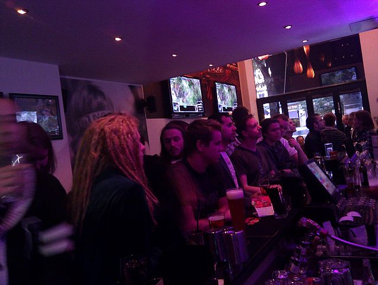
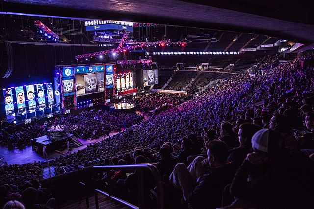

Convenções
Pedro Henrique e Renan Gentil
É bem verdade que as empresas de jogos e de consoles gastam muito dinheiro com marketing e publicidade para promover seus produtos, mais o que mais ajuda nisso são as famosas feiras de jogos que ocorrem no mundo inteiro.

BarCraft - DreamHack Valencia em 2011
DreamHack LAN Party em 2004
E-Sports
E-Spots é o termo usado que significa esportes eletrônicos, ela é uma modalidade que nada mais e do que uma competição entre jogadores profissionais disputando torneio de jogos. Os gêneros de jogos mais comuns dos esportes eletrônicos são os de estratégia luta e tiro.
As competições de jogos eletrônicos não é tão recente como todos pensam, a primeira competição desse gênero foi no ano de 1972 nos Estados Unidos para os estudantes da Universidade de Stanford com o jogo Spacewar.
Na década de 80 o Atari começou a promover algumas competições em grande escala pelos Estados Unidos tendo algumas chegado a 10mil competidores.
Em 1990 é criado a Nintendo World Championschip que diferente da competição do Atari essa já promovia um torneio mais longo e organizado tendo varias etapas passando por cidades diferentes até chegar na Califórnia onde seria disputada a final.
A partir dos anos 2000 que as competições de jogos eletronicos passam a crescer cada vez mais com um destaque na Asia onde passou a se formar varias ligas de competição e principalmente na Coreia Do Sul onde a febre foi maior, tanto até que foram criados dois canais de televisão dedicado aos jogos eletrônicos Ongamenet e o MBCGame que passam a transmitir competições de de jogos como Starcraft e Warcraft III.
MOBA
Troféu da final do mundial de League of Legends em 2013.
Atualmente o gênero mais jogado por conta de jogos como League of Lengeds e Dota2.
EVO
Finais de Street Foghter V em Mandalay Bay no ano de 2016.
O EVO ou Evolution Championship Series, é um torneio do gênero de luta trazendo diversos tipos de jogos desse gênero tais como: Mortal Kombat X, Ultra Street Fighter 4, Super Smash Bros. Melee, Killer Instinct e Tekken 7.
FPS

Final da MLG Columbus em 2015.
A segunda maior categoria de jogos quando falamos sobre competições, apenas atrás da categoria MOBA, jogos como Counter Strike e Unreal Tournament foram pioneiros na popularização de torneios em video games, atualmente temos diversos outros jogos como: Counter Strike Global Offensive, Rainbow Six Siege, Overwatch, Battlefield, entre muitos outros que caem na graça do público quando o assunto é competição.